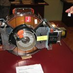

波士顿大学的
Howard Straubing
做了这么一个动画来展示AES加密算法的演示，挺不错的。
点击这里看全屏
（转载本站文章请注明作者和出处
酷 壳 – CoolShell
，请勿用于任何商业用途）
相关文章
关于移动端的钓鱼式攻击
如何设计“找回用户帐号”功能
【引文】如何用Python往Google Spreadsheet上写数据
Docker基础技术：Linux Namespace（下）
编程真难啊

1980年和2009年的1GB电脑内存的比较
The post
AES加密算法动画演示
first appeared on
酷 壳 - CoolShell
.